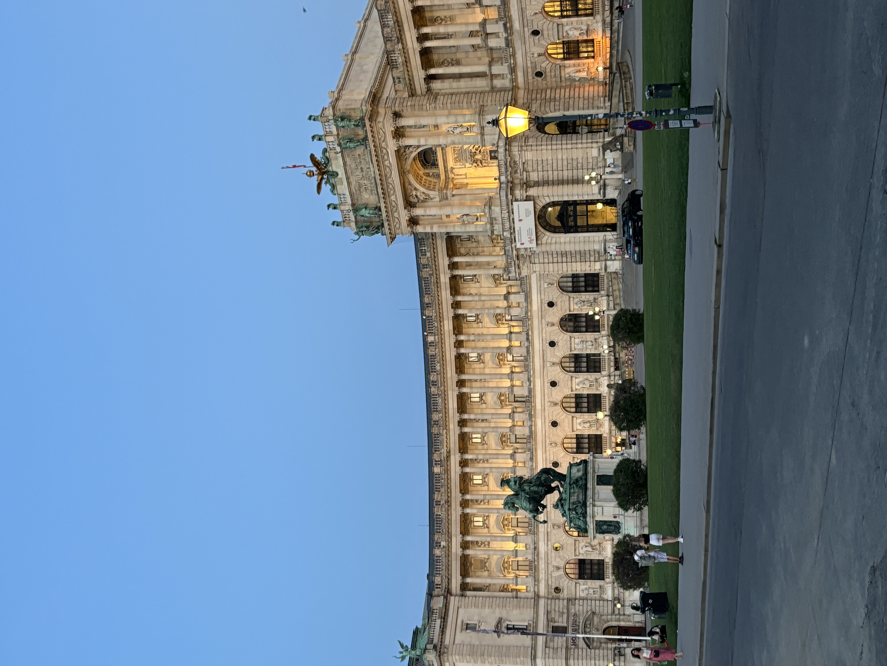
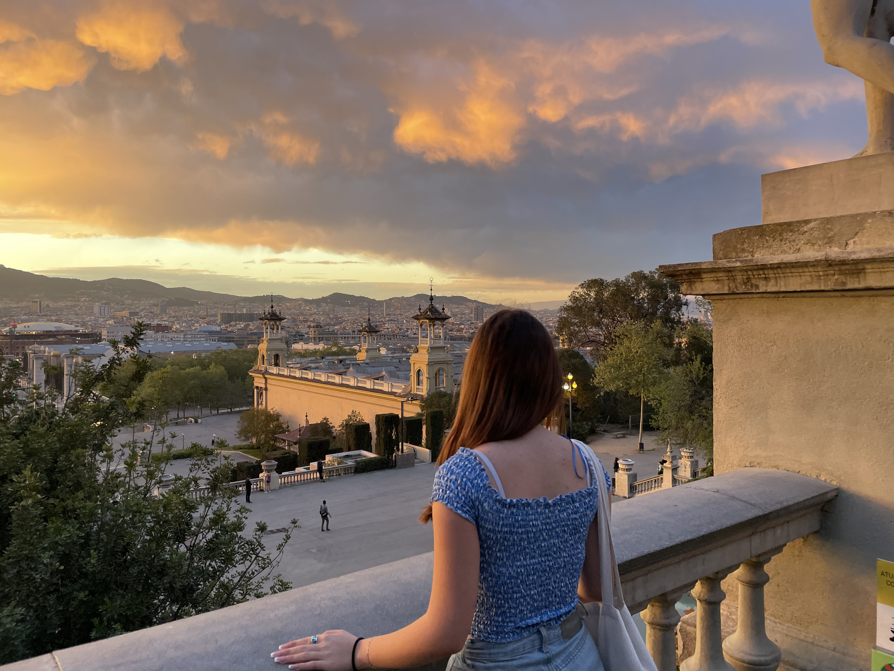
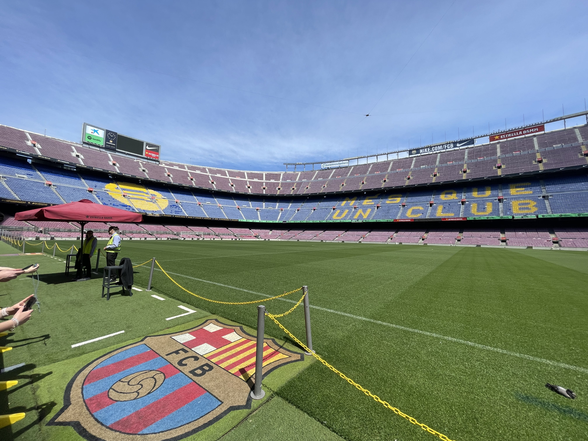
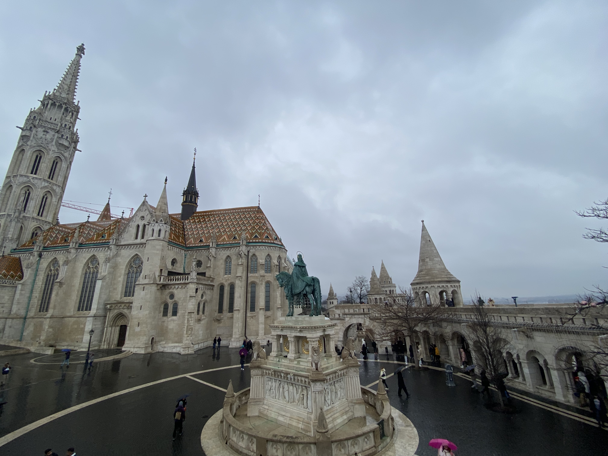
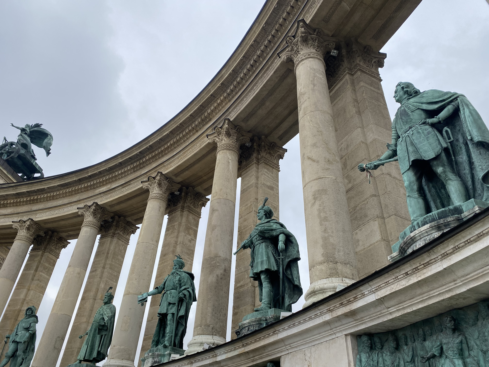

<!doctype html>
<html>
<head>
<meta charset="UTF-8">
	<title>O MENI</title>
	<link rel="stylesheet" href="style.css">

</head>

<body>

</html>
<h1>O MENI</h1>	
<p>
Imam 18 godina i živim u Zagrebu. Od malih nogu me zanimaju razna područja umjetnosti, te sam tako u zrelijoj dobi razvila interes i za dizajn grafičkih proizvoda. Ove godine upisala sam Grafički fakultet kako bi svoje interese pretvorila u znanje i vještine potrebne da se profesionalno bavim grafičkim dizajnom dalje u životu.
</p>	

<br>
	
<b>

<br>
		
<p>
Završila sam Školu primijenjene umjetnosti i dizajna i stekla zanimanje dizajnerice unutrašnje arhitekture. Veliki dio života provela sam plešući u plesnom ansamblu Black Angels. Slobodno vrijeme provodim gledajući filmove, kuhanjem, slušanjem glazbe i putovanjem.
</p>

<b>Moja najdraža pjesma<br>
	<br>
<audio controls>
  <source src="The Last Shadow Puppets - Miracle Aligner (Official Video) copy.mp3" type="audio/mpeg">
</audio>
	


<hr>

<h2>RADNO ISKUSTVO</h2>
<ol>
<li>LACONIQ – pripravnica u digitalnoj agenciji za marketing</li>
<li>DALEKOVOD d.d. – suradnica u korporativnim komunikacijama</li>
<li>Izrada vizualizacija interijera za evente</li>
<li>Dizajniranje i izrada komada namještaja i rasvjete</li>
<li>Projektiranje interijera</li>
</ol>

<hr>

<h2>PUTOVANJA</h2>
<ul>
<li><a href="https://hr.wikipedia.org/wiki/Be%C4%8D">BEČ</a></li>
<li><a href="https://hr.wikipedia.org/wiki/Italija">ITALIJA</a></li>
<li><a href="https://hr.wikipedia.org/wiki/London">LONDON</a></li>
<li><a href="https://hr.wikipedia.org/wiki/%C5%A0vicarska">ŠVICARSKA</a></li>
<li><a href="https://hr.wikipedia.org/wiki/Barcelona">BARCELONA</a></li>
<li><a href="https://hr.wikipedia.org/wiki/Pariz">PARIZ</a></li>
<li><a href="https://hr.wikipedia.org/wiki/Budimpe%C5%A1ta">BUDIMPEŠTA</a></li>
</ul>

<p>

&nbsp;&nbsp;&nbsp;

</p>

<p>

&nbsp;&nbsp;&nbsp;

</p>

<p>

&nbsp;&nbsp;&nbsp;

</p>
	
<iframe width="560" height="315"
src="https://www.youtube.com/embed/Sb-NCkC_Ksg"
title="YouTube video player"
frameborder="0"
allow="accelerometer; autoplay; clipboard-write; encrypted-media; gyroscope; picture-in-picture"
allowfullscreen>
</iframe>
<br>

<hr>

</body>
	
</html>
